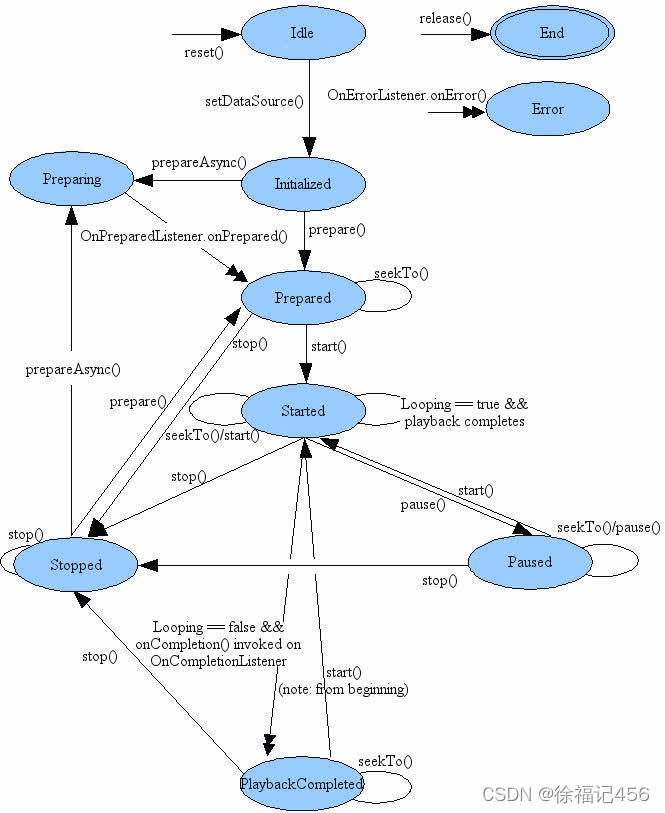
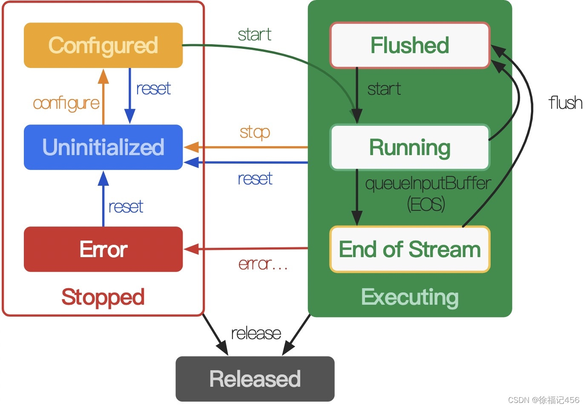
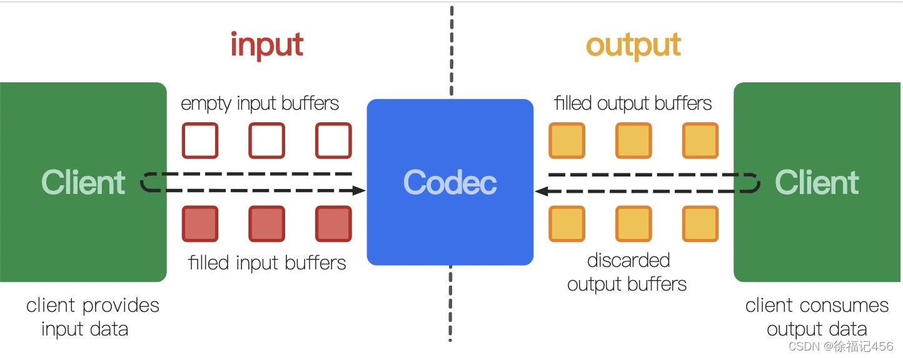

Android在应用层提供丰富的音视频多媒体接口，包括MediaPlayer、MediaCodec、AudioTrack、MediaMuxer、MediaExtractor、MediaRecorder、MediaMetadataRetriever、AudioRecord、AudioManager、Camera/Camera2/CameraX等。本文对咱们常用的多媒体API进行介绍，并且结合代码实例，希望能让大家对Android多媒体有深刻认识。
MediaPlayer播放器
MediaPlayer是Android提供的多媒体播放器，支持播放音频和视频，可监听播放状态，可获取音视频信息，支持播放常规操作。详情请查看官方文档：MediaPlayer文档
播放状态图
MediaPlayer播放状态包括：Idle、Initialized、Preparing、Prepared、Started、Paused、Stopped、PlaybackCompleted、End、Error。有严格时序和状态转换，需要按照时序来调用播放接口，如下图所示：

初始化播放器
初始化播放器步骤：创建播放器、设置DataSource、设置显示Surface、设置播放状态监听、准备播放。代码如下：
fun initPlayer(filePath: String, surface: Surface) {
try {
renderFirstFrame = false
mediaPlayer = MediaPlayer()
mediaPlayer!!.setDataSource(filePath)
mediaPlayer!!.setSurface(surface)
// 监听播放状态
setListener()
mediaPlayer!!.prepareAsync()
} catch (e: IOException) {
e.printStackTrace()
}
}
监听播放状态
播放状态包括：准备完毕、播放信息、缓冲进度、字幕更新、播放出错、播放完成等。有同步初始化和异步初始化两种方式，一般采用异步初始化，在准备完毕onPrepared时开始播放；监听InfoListener为MEDIA_INFO_VIDEO_RENDERING_START时，说明视频渲染第一帧；监听到播放出错onError时，应该结束播放。相关的播放状态监听如下：
private fun setListener() {
mediaPlayer!!.setOnPreparedListener {
mediaPlayer!!.start()
playerCallback?.onPrepare()
}
mediaPlayer!!.setOnInfoListener { mp: MediaPlayer?, what: Int, extra: Int ->
(
if (what == MediaPlayer.MEDIA_INFO_VIDEO_RENDERING_START) {
if (!renderFirstFrame) {
renderFirstFrame = true
playerCallback?.onRenderFirstFrame()
}
})
return@setOnInfoListener true
}
mediaPlayer!!.setOnBufferingUpdateListener { mp, percent ->
Log.i("MediaPlayer", "buffer percent=$percent")
}
mediaPlayer!!.setOnTimedTextListener { mp: MediaPlayer?, text: TimedText? ->
Log.i("MediaPlayer", "subtitle=" + text?.text)
}
mediaPlayer!!.setOnErrorListener { mp: MediaPlayer?, what: Int, extra: Int ->
return@setOnErrorListener playerCallback?.onError(what, extra)!!
}
mediaPlayer!!.setOnCompletionListener {
playerCallback?.onCompleteListener()
}
}
获取音视频信息
在onPrepared回调后，可以获取视频宽高、时长等信息。在播放过程中，可以获取当前播放位置。相关代码如下：
// 当前播放位置
fun currentPosition(): Int {
if (mediaPlayer == null)
return 0
return mediaPlayer!!.currentPosition
}
// 播放时长
fun duration(): Int {
if (mediaPlayer == null)
return 0
return mediaPlayer!!.duration
}
// 视频宽
fun getVideoWidth(): Int {
return mediaPlayer!!.videoWidth
}
// 视频高
fun getVideoHeight(): Int {
return mediaPlayer!!.videoHeight
}
播放操作
播放操作包括：seek拖动、播放/暂停、静音播放、倍速播放、设置音频、切换音轨等。其中，切换音轨或字幕轨，前提是存在多音轨或多字幕轨。相关代码如下：
// seek拖动
fun seekTo(position: Int) {
mediaPlayer?.seekTo(position)
}
// 播放/暂停
fun togglePlay() {
if (mediaPlayer!!.isPlaying) {
mediaPlayer!!.pause()
} else {
mediaPlayer!!.start()
}
}
// 静音播放
fun mute() {
mediaPlayer?.setVolume(0.0f, 0.0f)
}
// 播放音量
fun setVolume(volume: Float) {
if (volume < 0 || volume > 1)
return
mediaPlayer?.setVolume(volume, volume)
}
// 倍速播放
fun setSpeed(speed: Float) {
if (speed <= 0 || speed > 8)
return
if (android.os.Build.VERSION.SDK_INT >= android.os.Build.VERSION_CODES.M) {
val params = PlaybackParams()
params.speed = speed
mediaPlayer?.playbackParams = params
}
}
// 切换音轨或字幕轨
fun selectTrack(trackId: Int) {
mediaPlayer?.selectTrack(trackId)
}
MediaExtractor解封装器
MediaExtractor用于媒体文件的解封装，解析媒体信息、获取音视频流。比如，播放视频流程：解封装——>解码——>渲染播放。示例代码如下：
MediaExtractor extractor = new MediaExtractor();
extractor.setDataSource(...);
int numTracks = extractor.getTrackCount();
for (int i = 0; i < numTracks; ++i) {
MediaFormat format = extractor.getTrackFormat(i);
String mime = format.getString(MediaFormat.KEY_MIME);
if (weAreInterestedInThisTrack) {
extractor.selectTrack(i);
}
}
ByteBuffer inputBuffer = ByteBuffer.allocate(...)
while (extractor.readSampleData(inputBuffer, ...) >= 0) {
int trackIndex = extractor.getSampleTrackIndex();
long presentationTimeUs = extractor.getSampleTime();
...
extractor.advance();
}
extractor.release();
extractor = null;
由此可见，MediaExtractor使用步骤如下：
- 创建MediaExtractor解封装器；
- 设置DataSource数据源；
- 遍历所有媒体轨道，根据MediaFormat的mimetype选择轨道；
- 调用readSampleData读取音视频的数据包，调用advance更新；
- 调用release释放资源；
MediaCodec硬编解码
Android提供MediaCodec进行硬编码、硬解码，包括硬件芯片厂商的硬编解码、系统内置的软编解码。MediaCodec的效率比FFmpeg软解效率高，速度快，占用CPU少。但是FFmpeg软解的兼容性好，支持更广泛的格式和参数。详情请看文档：MediaCodec
MediaCodec状态图
MediaCodec的先后顺序状态包括：Unitialized、Configured、Flushed、Running、End of Stream、Error、Released。其中，如果编解码过程中出错，会转移到Error状态。具体的状态迁移如下图所示：

创建MediaCodec
Android提供两种方式创建MediaCodec，根据name和type。示例代码如下：
// 根据名字创建编解码
MediaCodec.createByCodecName(name)
// 根据mimetype创建编码器
MediaCodec.createEncoderByType(mimeType)
// 根据mimetype创建解码器
MediaCodec.createDecoderByType(mimeType)
同步与异步编解码
MediaCodec以前使用同步方式进行编解码。虽然同步调用比较方便，但是会导致阻塞。示例代码如下：
int inputBufferId = codec.dequeueInputBuffer(timeoutUs);
if (inputBufferId >= 0) {
ByteBuffer inputBuffer = codec.getInputBuffer(inputBufferId);
// 填充待编码/解码数据
......
codec.queueInputBuffer(inputBufferId, ...);
}
int outputBufferId = codec.dequeueOutputBuffer(...);
if (outputBufferId >= 0) {
ByteBuffer outputBuffer = codec.getOutputBuffer(outputBufferId);
codec.releaseOutputBuffer(outputBufferId, ...);
}
在Android5.0后，提供异步方式进行编解码，通过设置回调监听实现。示例代码如下：
codec.setCallback(new MediaCodec.Callback() {
@Override
void onInputBufferAvailable(MediaCodec mc, int inputBufferId) {
ByteBuffer inputBuffer = codec.getInputBuffer(inputBufferId);
// 填充待编码/解码数据
......
codec.queueInputBuffer(inputBufferId, ...);
}
@Override
void onOutputBufferAvailable(MediaCodec mc, int outputBufferId, ...) {
ByteBuffer outputBuffer = codec.getOutputBuffer(outputBufferId);
codec.releaseOutputBuffer(outputBufferId, ...);
}
@Override
void onOutputFormatChanged(MediaCodec mc, MediaFormat format) {
}
@Override
void onError(...) {
}
});
参数配置
MediaCodec提供一系列参数配置，包括：码率、码率模式、GOP间隔等等。而MediaFormat的参数包括：width、height、frameRate、duration、bitrate、sampleRate、channelCount等。另外，在比较新的API版本有新增参数。
HDR10_PLUS_INFO
在Android10(API 29)，新增支持HDR10+，可以设置HDR10+的metadata到mediacodec的输入队列，适用于编解码场景。详情请看文档：PARAMETER_KEY_HDR10_PLUS_INFO
LOW_LATENCY
在Android11(API 30)，新增支持低延时解码，如果开启，那么解码器不会在内部缓存多余数据。
编解码队列
编解码队列包括：编解码前队列和编解码后队列，以生产者和消费者形式存在。队列是环形缓冲区，会循环使用。从输入端角度，客户端作为生产者，为codec提供编解码前的数据，codec作为消费者取出数据进行编解码；从输出端角度，codec作为生产者，为客户端提供编解码后的数据，客户端作为消费者取出数据去渲染。示意图如下：

视频解码示例
以视频解码渲染为例，使用MediaExtractor解封装、MediaCodec解码，并且关联到Surface进行渲染。示例代码如下：
fun decodeVideo() {
try {
// 调用MediaExtractor解析得到MediaFormat
mediaExtractor!!.setDataSource(mFilePath)
for (i in 0 until mediaExtractor!!.trackCount) {
mediaFormat = mediaExtractor!!.getTrackFormat(i)
mimeType = mediaFormat!!.getString(MediaFormat.KEY_MIME)
if (mimeType != null && mimeType.startsWith("video/")) {
mediaExtractor!!.selectTrack(i)
break
}
}
// 创建MediaCodec，配置与启动
mediaCodec = MediaCodec.createDecoderByType(mimeType)
mediaCodec!!.configure(mediaFormat, mSurface, null, 0)
mediaCodec!!.start()
while (!isRunning) {
val inputIndex = mediaCodec!!.dequeueInputBuffer(DEQUEUE_TIME)
if (inputIndex >= 0) {
val inputBuffer = mediaCodec!!.getInputBuffer(inputIndex)
val sampleSize = mediaExtractor!!.readSampleData(inputBuffer!!, 0)
// 待解码数据入队列
if (sampleSize < 0) {
mediaCodec!!.queueInputBuffer(inputIndex, 0, 0, 0, MediaCodec.BUFFER_FLAG_END_OF_STREAM)
} else {
mediaCodec!!.queueInputBuffer(inputIndex, 0, sampleSize, mediaExtractor!!.sampleTime, 0)
mediaExtractor!!.advance()
}
}
// 解码后数据出队列
val outputIndex = mediaCodec!!.dequeueOutputBuffer(bufferInfo, DEQUEUE_TIME)
if (outputIndex != MediaCodec.INFO_OUTPUT_FORMAT_CHANGED
&& outputIndex != MediaCodec.INFO_TRY_AGAIN_LATER
&& outputIndex != MediaCodec.INFO_OUTPUT_BUFFERS_CHANGED) {
mediaCodec!!.releaseOutputBuffer(outputIndex, true)
}
}
} catch (e: Exception) {
Log.e(TAG, "decode error=$e")
}
}
MediaMuxer封装器
MediaMuxer封装器用于封装音视频流，和MediaExtractor作用刚好相反。比如，录制视频流程：采集音视频流——>编码——>封装。接下来，以MediaExtractor解封装和MediaMuxer封装作为示例，参考代码如下：
fun muxMediaFile(inputPath: String, outputPath: String): Boolean {
if (inputPath.isEmpty() || outputPath.isEmpty()) {
return false
}
var happenError = false
// 1、创建MediaMuxer
val mediaMuxer = MediaMuxer(outputPath, MediaMuxer.OutputFormat.MUXER_OUTPUT_MPEG_4)
val mediaExtractor = MediaExtractor()
try {
var videoIndex = 0
var audioIndex = 0
var audioFormat: MediaFormat? = null
var videoFormat: MediaFormat? = null
var finished = false
val bufferInfo = MediaCodec.BufferInfo()
val inputBuffer = ByteBuffer.allocate(2 * 1024 * 1024)
mediaExtractor.setDataSource(inputPath)
// 遍历所有轨道，根据mimetype选择轨道
for (i in 0 until mediaExtractor.trackCount) {
val mediaFormat = mediaExtractor.getTrackFormat(i)
val mimeType = mediaFormat.getString(MediaFormat.KEY_MIME)
if (mimeType != null && mimeType.startsWith("video")) {
videoIndex = i
videoFormat = mediaFormat
mediaExtractor.selectTrack(i)
} else if (mimeType != null && mimeType.startsWith("audio") && audioFormat == null) {
audioIndex = i
audioFormat = mediaFormat
mediaExtractor.selectTrack(i)
}
}
// 2、添加轨道，传入MediaFormat
if (videoFormat != null) {
mediaMuxer.addTrack(videoFormat)
}
if (audioFormat != null) {
mediaMuxer.addTrack(audioFormat)
}
// 3、开启MediaMuxer
mediaMuxer.start()
while (!finished) {
// 解封装获取音视频流数据
val sampleSize = mediaExtractor.readSampleData(inputBuffer, 0)
if (sampleSize > 0) {
bufferInfo.size = sampleSize
bufferInfo.flags = mediaExtractor.sampleFlags
bufferInfo.presentationTimeUs = mediaExtractor.sampleTime
// 4、调用MediaMuxer把音视频流重新封装
if (mediaExtractor.sampleTrackIndex == videoIndex) {
mediaMuxer.writeSampleData(videoIndex, inputBuffer, bufferInfo)
} else if (mediaExtractor.sampleTrackIndex == audioIndex) {
mediaMuxer.writeSampleData(audioIndex, inputBuffer, bufferInfo)
}
inputBuffer.flip()
mediaExtractor.advance()
} else if (sampleSize < 0) {
finished = true
}
}
} catch (e: Exception) {
happenError = true
} finally {
// 5、释放资源
mediaMuxer.release()
mediaExtractor.release()
return !happenError
}
}
由此可见，MediaMuxer的使用步骤如下：
- 创建MediaMuxer；
- 添加MediaFormat到轨道；
- 开启MediaMuxer；
- 调用writeSampleData来封装音视频流；
- 释放资源；
AudioTrack音频播放
AudioTrack是Android在应用层提供的音频播放器。如果对延时有严格要求，可以使用底层提供的OpenSL ES，或者AAudio，而oboe库有对AAudio的封装。其中AAudio通过共享内存，降低延时，提高处理效率。
以MediaExtractor解封装、MediaCodec解码、AudioTrack播放三者结合，看看AudioTrack的代码示例。首先是初始化工作：
// 初始化MediaExtractor
private fun parseAudioFormat(path: String): MediaFormat? {
mediaExtractor = MediaExtractor()
try {
mediaExtractor?.setDataSource(path)
for (i in 0 until mediaExtractor!!.trackCount) {
val mediaFormat = mediaExtractor!!.getTrackFormat(i)
val mimeType = mediaFormat.getString(MediaFormat.KEY_MIME)
if (mimeType != null && mimeType.startsWith("audio")) {
mediaExtractor!!.selectTrack(i)
return mediaFormat
}
}
} catch (e: Exception) {
Log.e(TAG, "parseAudioFormat err=$e")
}
return null
}
// 初始化MediaCodec
private fun initMediaCodec(mediaFormat: MediaFormat): Boolean {
val mimeType = mediaFormat.getString(MediaFormat.KEY_MIME)
mediaCodec = MediaCodec.createDecoderByType(mimeType)
return try {
mediaCodec!!.configure(mediaFormat, null, null, 0)
mediaCodec!!.start()
true
} catch (e: Exception) {
Log.e(TAG, "initMediaCodec err=$e")
false
}
}
// 初始化AudioTrack
private fun initAudioTrack(mediaFormat: MediaFormat): Boolean {
val sampleRate = mediaFormat.getInteger(MediaFormat.KEY_SAMPLE_RATE)
val channelCount = mediaFormat.getInteger(MediaFormat.KEY_CHANNEL_COUNT)
val channelConfig = if (channelCount == 1) {
AudioFormat.CHANNEL_OUT_MONO
} else {
AudioFormat.CHANNEL_OUT_STEREO
}
val encoding = AudioFormat.ENCODING_PCM_16BIT
val bufferSize = AudioTrack.getMinBufferSize(sampleRate, channelConfig, encoding)
Log.e(TAG, "sampleRate=$sampleRate, channelCount=$channelCount, bufferSize=$bufferSize")
try {
val audioFormat = AudioFormat.Builder()
.setEncoding(encoding)
.setSampleRate(sampleRate)
.setChannelMask(channelConfig)
.build()
val audioAttributes = AudioAttributes.Builder()
.setLegacyStreamType(AudioManager.STREAM_MUSIC)
.build()
audioTrack = AudioTrack(audioAttributes, audioFormat,
bufferSize, AudioTrack.MODE_STREAM, AudioManager.AUDIO_SESSION_ID_GENERATE)
audioTrack!!.play()
} catch (e: Exception) {
Log.e(TAG, "initAudioTrack err=$e")
return false
}
return true
}
接下来，调用MediaExtractor的readSampleData方法解析音视频流，调用MediaCodec的queueInputBuffer和dequeueOutputBuffer方法进行解码，最后调用AudioTrack的write方法进行播放。需要注意的是，解封装、解码、播放应该分为三个线程，这里只是简单演示使用方法。相关代码如下：
fun playAudio(path: String) {
var finished = false
val data = ByteArray(10 * 1024)
running = AtomicBoolean(true)
val bufferInfo = MediaCodec.BufferInfo()
val mediaFormat = parseAudioFormat(path) ?: return release()
var result = initMediaCodec(mediaFormat)
if (!result) {
return release()
}
result = initAudioTrack(mediaFormat)
if (!result) {
return release()
}
while (!finished) {
if (!running!!.get()) {
break
}
val inputIndex = mediaCodec!!.dequeueInputBuffer(DEQUEUE_TIME)
if (inputIndex >= 0) {
val inputBuffer = mediaCodec!!.getInputBuffer(inputIndex)
// demux
val sampleSize = mediaExtractor!!.readSampleData(inputBuffer!!, 0)
// decode
if (sampleSize < 0) {
mediaCodec!!.queueInputBuffer(inputIndex, 0, 0,
0, MediaCodec.BUFFER_FLAG_END_OF_STREAM)
finished = true
} else {
mediaCodec!!.queueInputBuffer(inputIndex, 0, sampleSize,
mediaExtractor!!.sampleTime, mediaExtractor!!.sampleFlags)
mediaExtractor!!.advance()
}
}
val outputIndex = mediaCodec!!.dequeueOutputBuffer(bufferInfo, DEQUEUE_TIME)
// play
if (outputIndex >= 0) {
val outputBuffer = mediaCodec!!.getOutputBuffer(outputIndex)
val size = outputBuffer!!.limit()
outputBuffer.get(data, outputBuffer.position(), size - outputBuffer.position())
audioTrack!!.write(data, 0, size)
mediaCodec!!.releaseOutputBuffer(outputIndex, false)
SystemClock.sleep(SLEEP_TIME)
}
}
release()
}